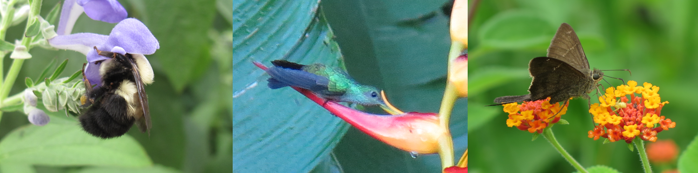

Reach Kelsey by email: Kelsey.Byers (at) jic.ac.uk
Group Leader: Kelsey J.R.P. Byers, Ph.D.
Welcome to the Byers Lab website! Our research focuses on the role that floral scent and other floral signals plays in mediating animal pollination of flowering plants, and how that specific pollination plays a role in angiosperm (flowering plant) reproductive isolation and speciation. We work with a variety of model systems, including Mimulus (monkeyflowers, Phrymaceae), Gymnadenia (hardy orchids, Orchidaceae), and several agricultural crops. Check out the specific pages above to learn more about our lab members, publications (Google Scholar), work in diversity, equity, and inclusion in STEM, and ways to join the lab. You can also check out our website at the John Innes Centre.